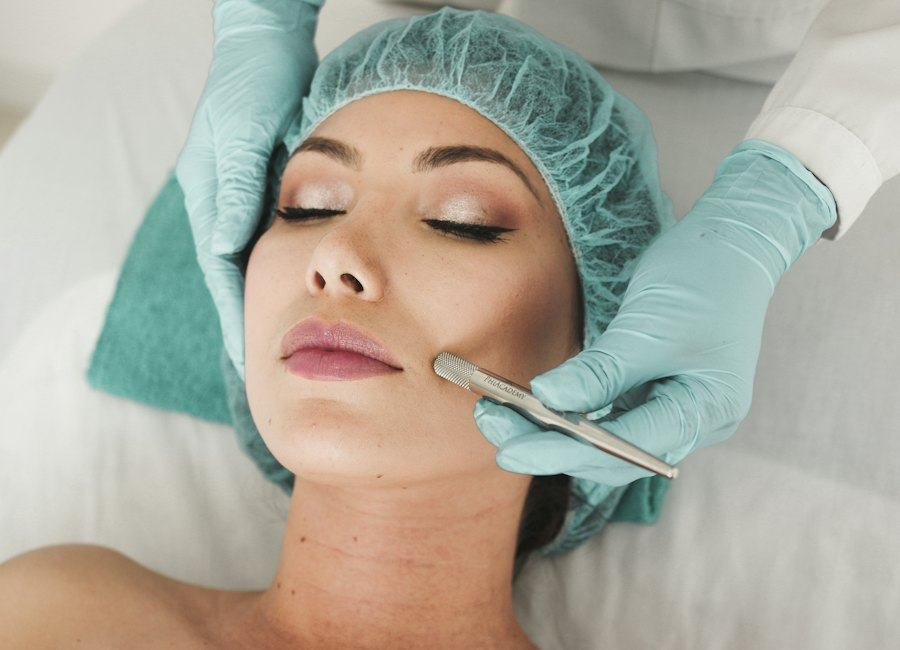

Acide hyaluronique
Injections pour hydrater ou adoucir, après consultation.
Page dédiée →Soin hydrofacial réalisé par le Dr Jessica Marciano au Centre d'Orthodontie Gravelle, 176 Rue de Paris, 94220 Charenton-le-Pont.
L'hydrofacial associe un nettoyage et une hydratation. Ce n'est pas un traitement de maladie de peau. Au Centre d'Orthodontie Gravelle, 176 Rue de Paris, 94220 Charenton-le-Pont, le soin est proposé par le Dr Jessica Marciano après un échange sur la peau. Les résultats varient.
Charenton-le-Pont (94220), Val-de-Marne : le même cabinet que pour l'orthodontie. Cadre médical, consultation préalable, devis avant acte. Pas de tarif en ligne, pas de garantie de résultat.

Les adultes qui souhaitent un soin visage hydratant et nettoyant, dans un cadre médical, à Charenton-le-Pont ou depuis les communes voisines (Saint-Maurice, Maisons-Alfort, Ivry-sur-Seine, Paris 12e). Ce n'est pas un traitement de maladie de peau. En cas de lésion douteuse, d'acné inflammatoire sévère ou de dermatose, un avis dermatologique reste prioritaire.
Si la demande porte sur un teint terne avec indication de soin de surface plus marqué, on pourra discuter d'un peeling. Si la question est un volume ou un creux, l'acide hyaluronique sera abordé à part. Hub : soins esthétiques à Charenton-le-Pont.
On parle d'abord de vos habitudes de soin, de votre sensibilité, d'éventuelles contre-indications. Le protocole est ensuite réalisé au cabinet, étape par étape. Dans la plupart des cas, les activités habituelles peuvent reprendre ensuite ; cela dépend de votre peau. Des conseils d'entretien vous sont donnés pour prolonger le confort obtenu — sans transformer cela en programme commercial.
Comme pour les autres soins esthétiques du cabinet, un devis est remis avant l'acte. Les soins esthétiques médicaux ne sont en principe pas pris en charge par l'Assurance Maladie. L'orthodontie, elle, reste agréée Sécurité sociale (tiers payant, CMU).
Métro ligne 8, station Liberté (la plus proche, environ 450 m). Charenton-Écoles est à environ 1,2 km. Bus 24 (arrêt Charenton-Écoles ou Pont Nelson Mandela selon votre origine). Stationnement de voirie à proximité. Horaires et plan.
C'est un soin visage qui associe un nettoyage en profondeur et une hydratation, réalisé au Centre d'Orthodontie Gravelle, 176 Rue de Paris, 94220 Charenton-le-Pont, par le Dr Jessica Marciano, chirurgien-dentiste (activité orientée orthodontie), au Centre d'Orthodontie Gravelle, Charenton-le-Pont, après évaluation.
Non. C'est un soin de confort, dans un cadre médical. Il ne se substitue pas à un suivi dermatologique ni au diagnostic d'une maladie de peau.
Dans la plupart des cas, oui, selon la sensibilité de votre peau. Les consignes vous sont précisées le jour du soin.
Doctolib ou 01 43 96 26 00. Centre d'Orthodontie Gravelle, 176 Rue de Paris, 94220 Charenton-le-Pont.
Injections pour hydrater ou adoucir, après consultation.
Page dédiée →Soin de surface, si l'indication le permet.
Page dédiée →Acide hyaluronique, peeling et hydrofacial au même cabinet.
Soins esthétiques →Vue d'ensemble : soins esthétiques à Charenton-le-Pont · Accueil du cabinet d'orthodontie · Le Dr Jessica Marciano, Centre d'Orthodontie Gravelle, Charenton-le-Pont · Contact.
Consultation au Centre d'Orthodontie Gravelle, 176 Rue de Paris, 94220 Charenton-le-Pont. Doctolib ou 01 43 96 26 00.
Prendre rendez‑vous 01 43 96 26 00